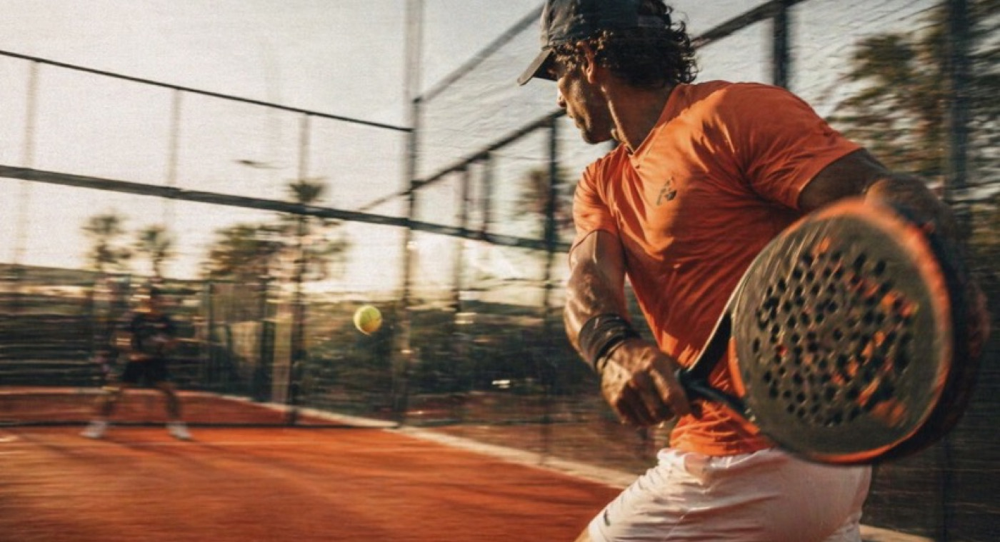
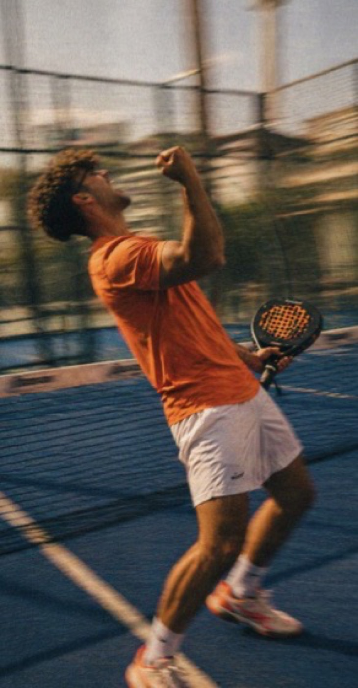
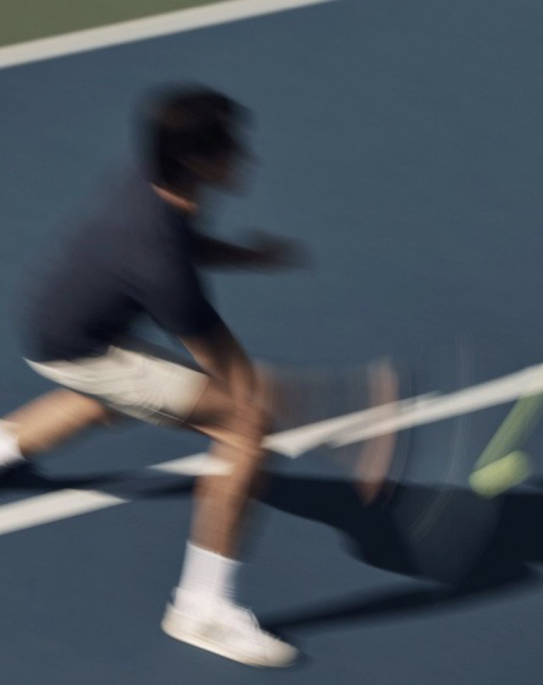
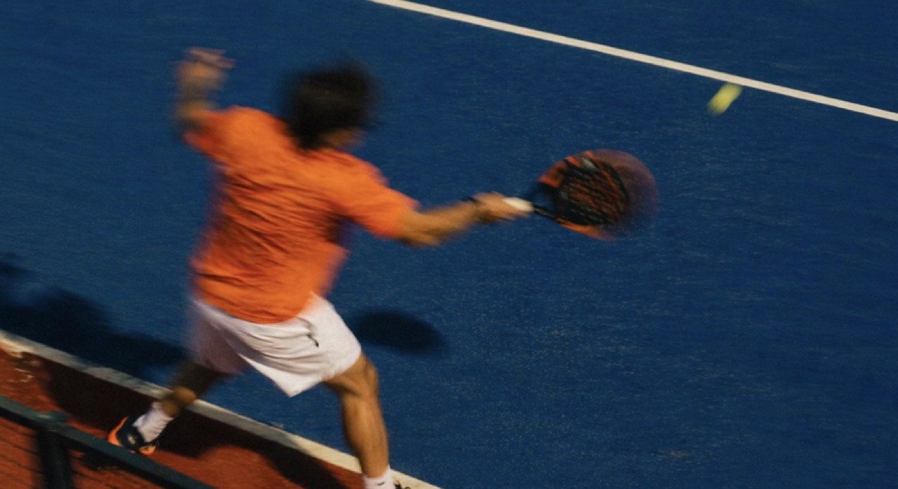

Bod 3 zadání · návrh
Kroky, pořadí a logika jsou z testovací verze a nemění se. Tady je jen vzhled: stavy, karty, rozpis, živé skóre, tabulky, pavouk a skupiny. Každá sekce má poznámku, co se liší od testovací verze ze 7. 10. 2026. Pravidla: „event“ místo „turnaj“, bílé pozadí a fotky, navy jen hlavičky, oranžová jen akce.
01
Jedna sada stavů pro kartu, stránku eventu i engine. Každý stav má jednu barvu a jedno slovo.
02
Homepage, stránka komunity a „Moje eventy“. Stejná karta, mění se jen štítek stavu a tlačítko.

SpolečenskýOtevřeno200 KčOtevřeno

SoutěžníPlno · čeká 3250 KčPlno

SoutěžníProbíháProbíhá

SpolečenskýOdehránoOdehráno
03
Stejná struktura jako v PC verzi (kolo jako karta s navy hlavičkou, odznak kurtu, jména pod sebou). Na telefonu větší písmo a jedno kolo pod druhým.
Telefon · organizátor u kurtu
04
Karta kurtu má tři stavy. Okraj vlevo říká, co dělat: oranžová = zadej skóre, zelená = zapsáno. Celá karta je tlačítko. Na telefonu (obrazovka Průběh) jsme šly ještě dál podle PadelMixu: velké číslo nad každým týmem, klepnutím na něj se zadají body a vítěz se obarví navy.
Průběh na telefonu (měřítko PadelMix)
Čeká na skóre
Zapsáno · vítěz navy, poražený šedě
Hraje se celkem 24 bodů. Klepnutím na výsledek se rovnou uloží.
Zadání skóre (výřez)
05
Průběžná i konečná. Stejné sloupce jako PC verze (Z, V, R, P, Body, +/−), na telefonu se schová R a ostatní sloupce zúží.
| # | Hráč | Z | V | P | Body | +/− |
|---|---|---|---|---|---|---|
| 1 | Petr Svoboda | 3 | 2 | 1 | 51 | +30 |
| 2 | Lukáš Dvořák | 3 | 2 | 1 | 48 | +24 |
| 3 | Martin Černý | 3 | 2 | 1 | 41 | +10 |
| 4 | Jana Malá (ty) | 3 | 2 | 1 | 40 | +8 |
| 5 | Tereza Hájková | 3 | 1 | 1 | 36 | 0 |
| 6 | Klára Růžičková | 3 | 0 | 3 | 17 | −38 |
06
Dnes je pavouk v aplikaci seznam zápasů po fázích. Navrhujeme sloupce fází vedle sebe na počítači a záložky fází na telefonu. Data jsou z eventu „Playoff 6 párů“ v testovací verzi.
Telefon: fáze jako záložky
07
Skupinová fáze před pavoukem. Kdo postupuje, má zelenou tečku, čára odděluje postupující.
| # | Pár | Z | V | Body |
|---|---|---|---|---|
| 1 | Veselý / Horák | 3 | 3 | 72 |
| 2 | Novák / Svoboda | 3 | 2 | 61 |
| 3 | Němec / Marek | 3 | 1 | 48 |
| 4 | Malý / Zeman | 3 | 0 | 35 |
| # | Pár | Z | V | Body |
|---|---|---|---|---|
| 1 | Dvořák / Černý | 2 | 2 | 50 |
| 2 | Pokorný / Pospíšil | 2 | 1 | 44 |
| 3 | Procházka / Kučera | 2 | 1 | 39 |
| 4 | Beneš / Doležal | 2 | 0 | 27 |